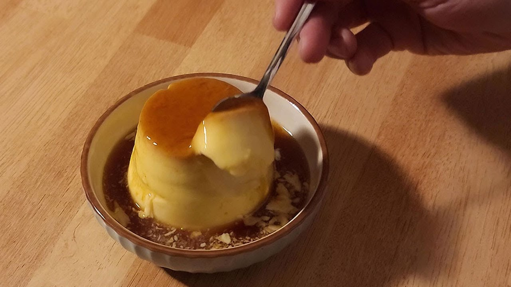

Pudding

Description
Simple pudding recipe using just milk, eggs and sugar. This one is from FOOD HOLIC youtube channel.
Ingredients
- 200ml of Milk
- Two Eggs
- Brown Sugar
Steps
- Put sugar in a pot and cook it on medium heat.
- When the sugar is dissolved, add water little by litte while it's still being cooked.
- Put the cooked sugar in two cups.
- Crack two eggs and put them in a bowl.
- Stir them carefully not to form bubbles.
- Add three tablespoons of sugar into the egg mixture.
- Sift the eggs through a sieve twice.
- Warm the milk over medium heat. The temperature should not exceed 60 degrees celsius.
- Pour the warm milk little by little into the eggs while stirring them.
- Then pour the egg-milk mixture slowly into the cooked sugar cups
- Close the lid of the cups with aluminium foils.
- Prepare a small amount of water in a pot and place a towel over the water.
- Then put the cups on the towel and close the pot lid and cook it on medium heat for 8 minutes.
- After that, take out the cups carefully with heat-proof gloves and cool them off for one hour.
- Remove the aluminium foil cover from the cups and cool them in a refrigerator for three hours.
- And finally, you can take them out from the refrigerator and scrape the inside edge of the cups with a toothpick so that you can flip it upside down to pour the solid pudding on a plate, cold, soft and ready for you to feast.